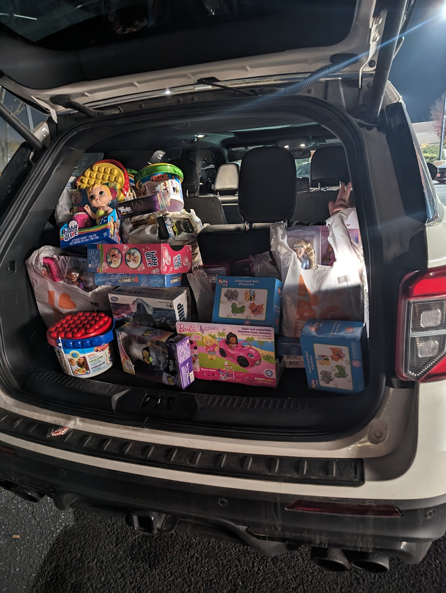

Hello and a warm welcome to all at CharityCase.net! I’m Will Hatzer, and it’s my pleasure to invite you to join us as we start preparing for our 2024 toy drive. Following the success of our 2023 drive, we’re excited to make the next one even more impactful.
Watch the toy-drive video on YouTube.
My Story: The Gift of Giving
My journey into the world of giving began back in Christmas 1986. As a child in a family doing its best to make ends meet, I learned the true spirit of Christmas. Thanks to the generosity of our local firehouse and the kindness of strangers, I received my first bicycle—a blue beacon of joy in a difficult time. This experience taught me the profound impact of generosity, inspiring me to pay it forward.
The Evolution of Our Toy Drive
What started at a local firehouse in Columbus, Ohio, as a personal mission to replicate that joy I felt as a child, has grown into a community-wide effort. Moving from Ohio to California, the drive expanded from a small group of friends and family to include local car clubs and businesses. Each year, we strive to reach more children.
How You Can Help
- Financial donations help us buy toys and make sure each dollar goes a long way.
- Donors can share their stories and photos to inspire others and create a ripple effect of generosity.
- Stay connected for updates and direct-donation opportunities.
Thank You and Stay Tuned
A heartfelt thank you to everyone who has supported us. Your involvement is what turns this drive into a yearly celebration of hope and giving.
With heartfelt thanks,
Will Hatzer
